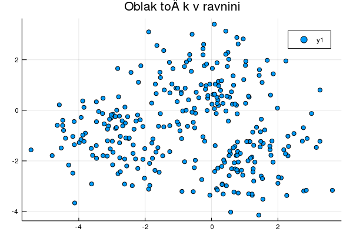
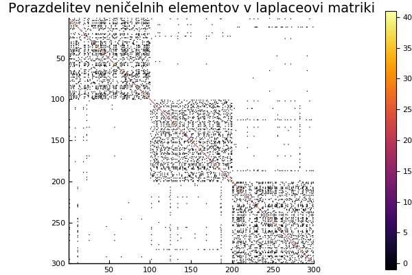
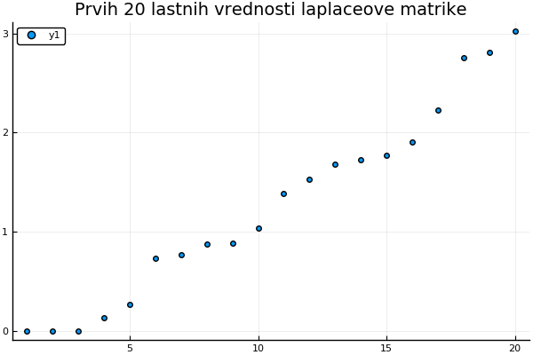
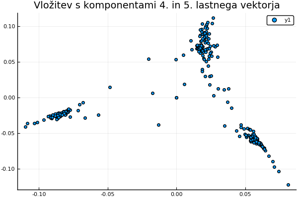

Spektralno razvrščanje v gruče
Pokazali bomo metodo razvrščanja v gruče, ki uporabi spektralno analizo Laplaceove matrike podobnostnega grafa podatkov, zato da podatke preslika v prostor, kjer jih je lažje razvrstiti.
Podobnostni graf in Laplaceova matrika
Podatke (množico točk v $\mathbb{R}^n$) želimo razvrstiti v več gruč. Najprej ustvarimo podobnostni uteženi graf, ki povezuje točke, ki so si v nekem smislu blizu. Podobnostni graf lahko ustvarimo na več načinov:
- ε-okolice: s točko xᵢ povežemo vse točke, ki ležijo v ε-okolici te točke
- k-najbližji sosedi: xₖ povežemo z xᵢ, če je xₖ med k najbližjimi
točkami. Tako dobimo usmerjen graf, zato ponavadi upoštevmo povezavo v obe smeri.
- poln utežen graf: povežemo vse točke, vendar povezave utežimo glede na razdaljo. Pogosto uporabljena utež je nam znana radialna bazna funkcija
\[w(x_i, x_k) = \exp\left(-\frac{\|x_i-x_k\|^2}{2\sigma^2}\right)\]
pri kateri s parametrom $\sigma$ lahko določamo velikost okolic.
Grafu podobnosti priredimo matriko uteži
\[W =[w_{ij}],\]
in Laplaceovo matriko
\[L = D - W,\]
kjer je $D=[d_{ij}]$ diagonalna matrika z elemetni $d_{ii}=\sum_{j}w_{ij}$. Laplaceova matrika $L$ je simetrična, nenegativno definitna in ima vedno eno lastno vrednost 0 za lastni vektor iz samih enic.
Algoritem
Velja naslednji izrek, da ima Laplaceova matrika natanko toliko lastnih vektorjev za lastno vrednost 0, kot ima graf komponent za povezanost. Na prvi pogled se zdi, da bi lahko bile komponente kar naše gruče, a se izkaže, da to ni najbolje.
- Poiščemo k najmanjših lastnih vrednosti za Laplaceovo matriko in izračunamonjihove lastne vektorje.
- Označimo matriko lastnih vektorjev Q=[v₁, v₂, ...,vₖ]. Stolpci Qᵀ ustrezajo koordinatam točk v novem prostoru.
- Za stolpce matrike Qᵀ izvedemo nek drug algoritem gručenja (npr. algoritem k povprečij).
Izberemo si število gruč $k$. Najprej točke naključno razdelimo v $k$ gruč. Nato naslednji postopek ponavljamo, dokler ne konvergira
- izračunamo center posamezne gruče $c_i=\frac{1}{|G_i|}\sum_{j\in G_i}\mathbf{x}_i$
- vsako točko razvrstimo v gručo, ki ima najbližji center
Primer
Algoritem preverimo na mešanici treh gaussovih porazdelitev
using Plots
using Random
m = 100;
Random.seed!(12)
x = [1 .+ randn(m, 1); -3 .+ randn(m,1); randn(m,1)];
y = [-2 .+ randn(m, 1); -1 .+ randn(m,1); 1 .+ randn(m,1)];
scatter(x, y, title="Oblak točk v ravnini")
savefig("06_oblak.png")
Izračunamo graf sosednosti z metodo $\varepsilon$-okolic in poiščemo laplaceovo matriko dobljenega grafa.
using SparseArrays
tocke = [(x[i], y[i]) for i=1:3*m]
r = 0.9
G = graf_eps_okolice(tocke, r)
L = LaplaceovaMatrika(G)
spy(sparse(Matrix(L)), title="Porazdelitev neničelnih elementov v laplaceovi matriki")
savefig("06_laplaceova_matrika_grafa.png")
Če izračunamo lastne vektorje in vrednosti laplaceove matrike dobljenega grafa, dobimo 4 najmanjše lastne vrednosti, ki očitno odstopajo od ostalih.
import LinearAlgebra.eigen
razcep = eigen(Matrix(L))
scatter(razcep.values[1:20], title="Prvih 20 lastnih vrednosti laplaceove matrike")
savefig("06_lastne_vrednosti.png")
scatter(razcep.vectors[:,4], razcep.vectors[:,5], title="Vložitev s komponentami 4. in 5. lastnega vektorja")
savefig("06_vlozitev.png")
Inverzna potenčna metoda
Ker nas zanima le najmanjših nekaj lastnih vrednosti, lahko njihov izračun in za izračun lastnih vektrojev uporabimo inverzno potenčno metodo. Pri inverzni potenčni metodi zgradimo zaporedje približkov z rekurzivno formulo
\[\mathbf{x}^{(k+1)} = \frac{A^{-1}\mathbf{x}^{(n)}}{\|A^{-1}\mathbf{x}^{(n)}\|}\]
in zaporedje približkov konvergira k lastnemu vektorju za najmanjšo lastno vrednost matrike $A$.
Računanje inverza je časovno zelo zahtevna operacija, zato se jo razen v nizkih dimenzijah, če je le mogoče izognemo. Namesto inverza raje uporabimo enega od razcepov matrike $A$. Če naprimer uporabimo LU razcep $A=LU$, lahko $A^{-1}\mathbf{b}$ izračunamo tako, da rešimo sistem $A\mathbf{x} = \mathbf{b}$ oziroma $LU\mathbf{x} = \mathbf{b}$ v dveh korakih
$ \begin{aligned} L\mathbf{y}&=\mathbf{b}\cr U\mathbf{x}&=\mathbf{y} \end{aligned} $
Programski jezik julia ima za ta namen prav posebno metodo factorize, ki za različne matrike, izračuna najbolj primeren razcep.
Laplaceova matrika je simetrična, zato so lastne vrednosti ortogonalne. Lastne vektorje lahko tako poiščemo tako, da iteracijo izvajamo na več vektorjih hkrati in nato na dobljeni bazi izvedemo ortogonalizacijo (QR razcep), da zaporedje lastnih vektorjev za lastne vrednosti, ki so najbližje najmanjši lastni vrednosti.
Laplaceova matrika grafa okolic je simetrična in diagonalno dominantna. Poleg tega je zelo veliko elementov enakih 0. Zato za rešitev sistema uporabimo metodo konjugiranih gradientov. Za uporabo metode konjugiranih gradientov zadošča, da učinkovito izračunamo množenje matrike z vektorjem. Težava je, ker so je laplaceova matrika grafa izrojena, zato metoda konjugiranih gradientov ne konvergira. Težavo lahko rešimo s premikom. Namesto, da računamo lastne vreednosti in vektorje matrike $L$, iščemo lastne vrednosti in vektorje malce premaknjene matrike $L+\varepsilon I$, ki ima enake lastne vektorje, kot $L$.
Programski jezik julia omogoča polimorfizem v obliki večlične dodelitve. Tako lahko za isto funkcijo definiramo različne metode. Za razliko od polmorfizma v objektno orientiranih jezikih, se metoda izbere ne le na podlagi tipa objekta, ki to metodo kliče, ampak na podlagi tipov vseh vhodnih argumentov. To lastnost lahko s pridom uporabimo, da lahko pišemo generično kodo, ki deluje za veliko različnih vhodnih argumentov. Primer je funkcija conjgrad, ki jo lahko uporabimo tako za polne matrike, matrike tipa SparseArray ali pa tipa LaplaceovaMatrika za katerega smo posebej definirali operator množenja *.
\[L\mathbf{x^{(k+1)}} = \mathbf{x^{(k)}}\]
Primerjajmo inverzno potenčno metodo z vgrajeno metodo za iskanje lastnih vrednosti s polno matriko
import Base:*, size
struct PremikMatrike
premik
matrika
end
*(p::PremikMatrike, x) = p.matrika*x + p.premik.*x
size(p::PremikMatrike) = size(p.matrika)
Lp = PremikMatrike(0.01, L)
l, v = inverzna_iteracija(Lp, 5, (Lp, x) -> conjgrad(Lp, x)[1])Algoritem k-povprečij
nove_tocke = [tocka for tocka in zip(razcep.vectors[:,4], razcep.vectors[:,5])]
gruce = kmeans(nove_tocke, 3)
p1 = scatter(tocke[findall(gruce .== 1)], color=:blue, title="Originalne točke")
scatter!(p1, tocke[findall(gruce .== 2)], color=:red)
scatter!(p1, tocke[findall(gruce .== 3)], color=:green)
p2 = scatter(nove_tocke[findall(gruce .== 1)], color=:blue, title="Preslikane točke")
scatter!(p2, nove_tocke[findall(gruce .== 2)], color=:red)
scatter!(p2, nove_tocke[findall(gruce .== 3)], color=:green)
plot(p1,p2)
savefig("06_gruce.png")
Literatura
- Ulrike von Luxburg A Tutorial on Spectral Clustering
- Peter Arbenz Lecture Notes on Solving Large Scale Eigenvalue Problems
- Knjižnica Laplacians.jl
Koda
NumMat.kmeans — Methodgruce = kmeans(tocke, k)Točke tocke razvrsti v gruče z metodo k-povpečij.
NumMat.kddrevo — Functiondrevo = kddrevo(tocke, dim, globina)Točke iz seznama tocke razvrsti v k-d drevo začenši z dimenzijo dim.
Primer:
```jldoctest julia> tocke = [(2,3), (5,4), (9,6), (4,7), (8,1), (7,2)];
julia> drevo = kddrevo(tocke);
julia> print(drevo) (5, 4) --(7, 2) |–(9, 6) | --(8, 1)–(2, 3) `–(4, 7)
NumMat.najdi_okolico — Methodokolica = najdi_okolico(r, drevo::Drevo{T}, tocka::T; razdalja)Poišče točke v k-d drevesu, ki so manj kot r oddaljeni od dane točke tocka.
Primer
julia> drevo = kddrevo([(2,3), (5,4), (9,6), (4,7), (8,1), (7,2)]);
julia> najdi_okolico(2, drevo, (8,2))
2-element Array{Tuple{Int64,Int64},1}:
(8, 1)
(7, 2)